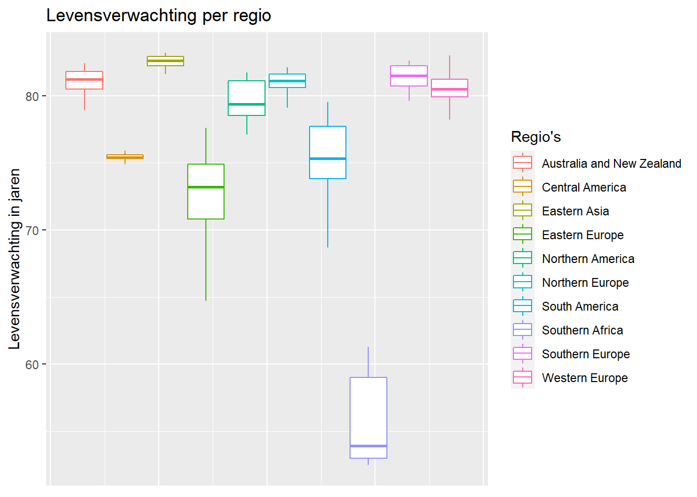
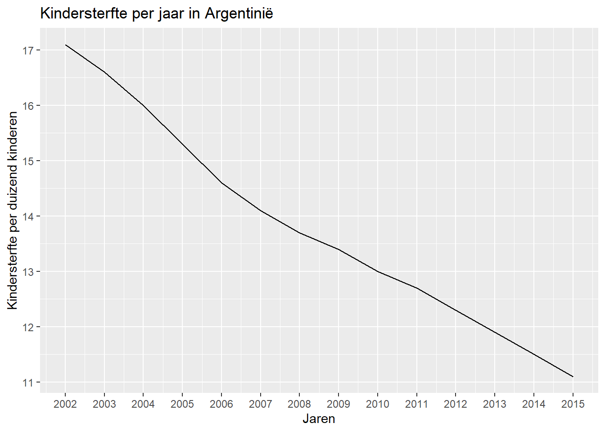
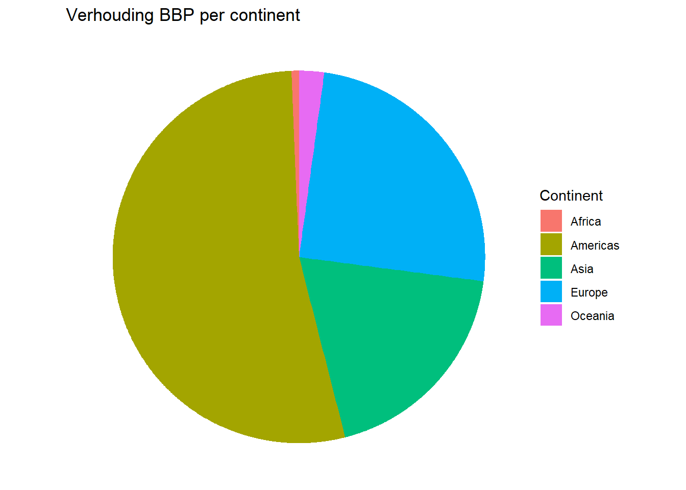

6 SQL data analyse
Hieronder wordt een data analyse uitgevoerd met behulp van SQL. Er zijn drie datasets, de eerste is van de activiteit van de griep in verschillende landen gemeten op verschillende dagen, de tweede is dezelfde informatie maar dan voor de ziekte dengue. Als laatste wordt hier gebruik gemaakt van een bijgevoegde dataset van dslabs genaamd gapminder met algemene demografische informatie per land. Het doel is om de data in te laden in SQL, dat weer aan te vragen met een query en daarna te visualiseren met wat grafieken.
Als eerste moet de data ingelezen worden, tidy gemaakt worden en er voor zorgen dat de datum gesplitst wordt over drie kolommen voor de verdere analyse. Daarna wordt het ook verkend om te controleren dat het inlezen goed is gegaan en de kolommen bijvoorbeeld de goede datatypes hebben.
# lees de data in
fluDf <- read_csv(here("assignment_7", "flu_data.csv"), skip = 11)
dengueDf <- read_csv(here("assignment_7", "dengue.csv"), skip = 11)
gapminderDf <- data.frame(gapminder)
# maak de griep en dengue data tidy want er zaten meerdere observaties op 1 rij
tidyFlu <- fluDf %>% pivot_longer(cols=tail(colnames(fluDf), n= 29), names_to= "country", values_to= "fluActivity")
tidyDengue <- dengueDf %>% pivot_longer(cols= tail(colnames(dengueDf), n= 10), names_to= "country", values_to= "dengueActivity")
# maak de datatype voor de country en year kolommen hetzelfde over de verschillende tabellen
gapminderDf$country <- as.character(gapminderDf$country)
tidyFlu <- tidyFlu %>% separate(col = Date, into = c("year", "month", "day"), sep = "-")
tidyDengue <- tidyDengue %>% separate(col = Date, into = c("year", "month", "day"), sep = "-")
# kijk of de datatypes nu overeenkomen en verken verder de data
summary(tidyDengue)## year month day country dengueActivity
## Length:6590 Length:6590 Length:6590 Length:6590 Min. :0.0000
## Class :character Class :character Class :character Class :character 1st Qu.:0.0530
## Mode :character Mode :character Mode :character Mode :character Median :0.1040
## Mean :0.1390
## 3rd Qu.:0.1755
## Max. :1.0000
## NA's :327summary(tidyFlu)## year month day country fluActivity
## Length:19111 Length:19111 Length:19111 Length:19111 Min. : 0.0
## Class :character Class :character Class :character Class :character 1st Qu.: 37.0
## Mode :character Mode :character Mode :character Mode :character Median : 185.0
## Mean : 473.7
## 3rd Qu.: 578.0
## Max. :10555.0
## NA's :1845summary(gapminderDf)## country year infant_mortality life_expectancy fertility population gdp continent region
## Length:10545 Min. :1960 Min. : 1.50 Min. :13.20 Min. :0.840 Min. : 31238 Min. : 40395128 Africa :2907 Western Asia :1026
## Class :character 1st Qu.:1974 1st Qu.: 16.00 1st Qu.:57.50 1st Qu.:2.200 1st Qu.: 1333486 1st Qu.: 1845780110 Americas:2052 Eastern Africa : 912
## Mode :character Median :1988 Median : 41.50 Median :67.54 Median :3.750 Median : 5009043 Median : 7794215003 Asia :2679 Western Africa : 912
## Mean :1988 Mean : 55.31 Mean :64.81 Mean :4.084 Mean : 27014609 Mean : 147954410013 Europe :2223 Caribbean : 741
## 3rd Qu.:2002 3rd Qu.: 85.10 3rd Qu.:73.00 3rd Qu.:6.000 3rd Qu.: 15231789 3rd Qu.: 55399648248 Oceania : 684 South America : 684
## Max. :2016 Max. :276.90 Max. :83.90 Max. :9.220 Max. :1376048943 Max. :11744219459700 Southern Europe: 684
## NA's :1453 NA's :187 NA's :185 NA's :2972 (Other) :5586Hierna wordt de gecleande data opgeslagen als CSV en als RDS.
# sla de gecleande data op
write.csv(tidyFlu, file = here("assignment_7", "tidyFlu.csv"), row.names = FALSE)
write.csv(tidyDengue, file = here("assignment_7", "tidyDengue.csv"))
write.csv(gapminderDf, file = here("assignment_7", "gapminderDf.csv"))
write_rds(tidyFlu, file = here("assignment_7", "tidyFlu.rds"))
write_rds(tidyDengue, file = here("assignment_7", "tidyDengue.rds"))
write_rds(gapminderDf, file = here("assignment_7", "gapminderDf.rds"))Nu wordt er een con object gemaakt wat niet included is in de html zodat men online mijn wachtwoord niet ziet. Daarna worden de CSVs geupload naar de SQL server.
# laad de tabellen in de database in
dbWriteTable(con, "tidyFlu", read_csv(here("assignment_7", "tidyFlu.csv")), overwrite = TRUE)
dbWriteTable(con, "tidyDengue", read_csv(here("assignment_7", "tidyDengue.csv")), overwrite = TRUE)
dbWriteTable(con, "gapminderDf", read_csv(here("assignment_7", "gapminderDf.csv")), overwrite = TRUE)Vervolgens wordt er wat verkennende data aangevraagd aan de database om te controleren dat de data goed is over gekomen waarna het uiteindelijk gejoined opgevraagd wordt vanuit de server.
# laat de namen van de verschillende tabellen in de database zien
dbListTables(con)## [1] "tidyFlu" "tidyDengue" "gapminderDf"# laat de namen van de kolommen van de verschillende tabellen zien
dbListFields(con, dbListTables(con)[1])## [1] "year" "month" "day" "country" "fluActivity"dbListFields(con, dbListTables(con)[2])## [1] "year" "month" "day" "country" "dengueActivity"dbListFields(con, dbListTables(con)[3])## [1] "country" "year" "infant_mortality" "life_expectancy" "fertility" "population" "gdp" "continent"
## [9] "region"# geef een summary van alle tabellen in de database
summary(dbReadTable(con, dbListTables(con)[1]))## year month day country fluActivity
## Min. :2002 Length:19111 Length:19111 Length:19111 Min. : 0.0
## 1st Qu.:2006 Class :character Class :character Class :character 1st Qu.: 37.0
## Median :2009 Mode :character Mode :character Mode :character Median : 185.0
## Mean :2009 Mean : 473.7
## 3rd Qu.:2012 3rd Qu.: 578.0
## Max. :2015 Max. :10555.0
## NA's :1845summary(dbReadTable(con, dbListTables(con)[2]))## year month day country dengueActivity
## Min. :2002 Length:6590 Length:6590 Length:6590 Min. :0.0000
## 1st Qu.:2006 Class :character Class :character Class :character 1st Qu.:0.0530
## Median :2009 Mode :character Mode :character Mode :character Median :0.1040
## Mean :2009 Mean :0.1390
## 3rd Qu.:2012 3rd Qu.:0.1755
## Max. :2015 Max. :1.0000
## NA's :327summary(dbReadTable(con, dbListTables(con)[3]))## country year infant_mortality life_expectancy fertility population gdp continent region
## Length:10545 Min. :1960 Min. : 1.50 Min. :13.20 Min. :0.840 Min. : 31238 Min. : 40395128 Length:10545 Length:10545
## Class :character 1st Qu.:1974 1st Qu.: 16.00 1st Qu.:57.50 1st Qu.:2.200 1st Qu.: 1333486 1st Qu.: 1845780110 Class :character Class :character
## Mode :character Median :1988 Median : 41.50 Median :67.54 Median :3.750 Median : 5009043 Median : 7794215003 Mode :character Mode :character
## Mean :1988 Mean : 55.31 Mean :64.81 Mean :4.084 Mean : 27014609 Mean : 147954410013
## 3rd Qu.:2002 3rd Qu.: 85.10 3rd Qu.:73.00 3rd Qu.:6.000 3rd Qu.: 15231789 3rd Qu.: 55399648248
## Max. :2016 Max. :276.90 Max. :83.90 Max. :9.220 Max. :1376048943 Max. :11744219459700
## NA's :1453 NA's :187 NA's :185 NA's :2972# join de gapminder tabel met de tidyflu tabel
joined <- dbGetQuery(con, "SELECT *
FROM \"gapminderDf\"
INNER JOIN \"tidyFlu\"
ON \"gapminderDf\".year = \"tidyFlu\".year
AND \"gapminderDf\".country = \"tidyFlu\".country")Uiteindelijk wordt de opgevraagde gejoinde data gebruikt om een paar visualisaties van de data mee te doen. Als eerste is er een box plot met op de y-as de levensverwachting in jaren en dit is gegroepeert per regio. De volgende is een lijngrafiek met op de y-as de kindersterfte per duizend kinderen in Argentinië en op de x-as de jaren waarop dit gemeten is. De laatste grafiek is een cirkel diagram met de BBP opgeteld per continent.
joined %>% ggplot(aes(color = region, y = life_expectancy)) +
geom_boxplot() +
labs(title = "Levensverwachting per regio",
y = "Levensverwachting in jaren",
color = "Regio's") +
theme(axis.title.x=element_blank(),
axis.text.x=element_blank(),
axis.ticks.x=element_blank())
joined %>% filter(country == "Argentina") %>% ggplot(aes(x = year, y = infant_mortality)) +
geom_line() +
scale_x_continuous(breaks = seq(2000,2020,1)) +
scale_y_continuous(breaks = seq(10,20,1)) +
labs(title = "Kindersterfte per jaar in Argentinië",
x = "Jaren",
y = "Kindersterfte per duizend kinderen")
joined %>% ggplot(aes(x = "", y = gdp, fill = continent)) +
geom_col() +
coord_polar(theta = "y") +
theme_void() +
labs(title = "Verhouding BBP per continent",
fill = "Continent")